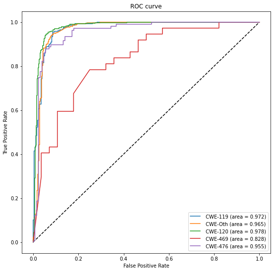

CNN
Contents
CNN#
# University of Notre Dame
# Multi Layer Perceptron (MLP) for "Vulnerability Prediction From Source Code Using Machine Learning"
# _________________________________________________________________________
# Pedro Alarcon, April 2022
import pandas as pd
import numpy as np
import argparse
import math
import string
from collections.abc import Iterable
from collections import Counter
import pandas as pd
from sklearn.preprocessing import LabelEncoder, OneHotEncoder
import argparse
from sklearn.metrics import accuracy_score
from tensorflow import keras
from keras.models import Sequential
from keras.layers import Dense, Conv1D, Flatten
from sklearn.metrics import roc_curve
from sklearn.metrics import auc
from sklearn import datasets, metrics
from sklearn.model_selection import train_test_split
from sklearn.linear_model import LogisticRegression
from sklearn.metrics import average_precision_score, precision_recall_curve
from sklearn.metrics import auc, plot_precision_recall_curve
import matplotlib.pyplot as plt
from matplotlib import pyplot
from sklearn.metrics import classification_report
import os
from sklearn.model_selection import train_test_split
print(os.getcwd())
/content
from google.colab import drive
drive.mount('/content/drive')
Mounted at /content/drive
Impact of Depth Analysis#
#folder_path = '/scratch365/palarcon/Vulnerability Project/CNN/train/'
folder_path = '/content/drive/MyDrive/Vulnerability Prediction/Processed Datasets/'
def load_data(path, column, rdm_state):
dataframe = pd.read_csv(path)
y = dataframe[column].astype(int) # numberize the labels i.e., tranforms True = 1, False = 0
print("Label Distribution: ")
print(y.value_counts())
y = y.values
X = dataframe.iloc[:, 7:]
num_features = len(X.columns)
X = X.values
X = np.reshape(X, (len(X), num_features, 1))
print("Dataset: ")
print(f"\nShape of features: {X.shape} (# samples, # features, channel) of type {type(X)}" )
print(f"Shape of labels: {y.shape} (# samples, ) of type {type(X)}" )
X_train, X_test, y_train, y_test = train_test_split(X, y, test_size=0.10, random_state=rdm_state)
return X_train, X_test, y_train, y_test
X_cwe_119_train, X_cwe_119_test, y_cwe_119_train, y_cwe_119_test = load_data(folder_path + 'cwe_119_train.csv', 'CWE-119', 42)
Label Distribution:
1 2710
0 2710
Name: CWE-119, dtype: int64
Dataset:
Shape of features: (5420, 1533, 1) (# samples, # features, channel) of type <class 'numpy.ndarray'>
Shape of labels: (5420,) (# samples, ) of type <class 'numpy.ndarray'>
def cnn_model(num_features):
model = Sequential()
#add layers
model.add(Conv1D( input_shape = (num_features, 1), filters=32, kernel_size=9, activation='relu'))
model.add(Flatten())
model.add(Dense(200, activation = 'relu'))
model.add((Dense(1, activation='sigmoid')))
model.summary()
model.compile(loss='binary_crossentropy', optimizer='adam', metrics=['accuracy'])
return model
cwe_119_model = cnn_model(1533)
#load trained model
cwe_119_model = keras.models.load_model('/content/drive/MyDrive/Vulnerability Prediction/CNN/cwe_119_model.ph')
Model: "sequential"
_________________________________________________________________
Layer (type) Output Shape Param #
=================================================================
conv1d (Conv1D) (None, 1525, 32) 320
flatten (Flatten) (None, 48800) 0
dense (Dense) (None, 200) 9760200
dense_1 (Dense) (None, 1) 201
=================================================================
Total params: 9,760,721
Trainable params: 9,760,721
Non-trainable params: 0
_________________________________________________________________
# fit network
#uncomment the below statement to train new model
#history = cwe_119_model.fit(X_cwe_119_train, y_cwe_119_train, epochs=10, verbose=2)
Epoch 1/10
153/153 - 1s - loss: 0.2846 - accuracy: 0.9026 - 652ms/epoch - 4ms/step
Epoch 2/10
153/153 - 1s - loss: 0.2657 - accuracy: 0.9116 - 694ms/epoch - 5ms/step
Epoch 3/10
153/153 - 1s - loss: 0.2452 - accuracy: 0.9170 - 663ms/epoch - 4ms/step
Epoch 4/10
153/153 - 1s - loss: 0.1978 - accuracy: 0.9307 - 659ms/epoch - 4ms/step
Epoch 5/10
153/153 - 1s - loss: 0.2251 - accuracy: 0.9196 - 654ms/epoch - 4ms/step
Epoch 6/10
153/153 - 1s - loss: 0.2132 - accuracy: 0.9278 - 656ms/epoch - 4ms/step
Epoch 7/10
153/153 - 1s - loss: 0.1913 - accuracy: 0.9317 - 666ms/epoch - 4ms/step
Epoch 8/10
153/153 - 1s - loss: 0.1764 - accuracy: 0.9387 - 658ms/epoch - 4ms/step
Epoch 9/10
153/153 - 1s - loss: 0.1627 - accuracy: 0.9434 - 642ms/epoch - 4ms/step
Epoch 10/10
153/153 - 1s - loss: 0.1545 - accuracy: 0.9512 - 670ms/epoch - 4ms/step
def run_acccuracy(model, X, y):
loss, acc = model.evaluate(X, y, verbose=0)
print(f'Test Accuracy: {acc*100}')
run_acccuracy(cwe_119_model,X_cwe_119_test, y_cwe_119_test)
Test Accuracy: 91.32841229438782
def generate_roc_plot(model, x_test, y_test):
# Generate a prediction using model.predict()
# and calculate it's shape:
print("Generate a prediction")
prediction = model.predict(x_test).ravel()
print("prediction shape:", prediction.shape)
fpr_keras, tpr_keras, thresholds_keras = roc_curve(y_test, prediction)
auc_keras = auc(fpr_keras, tpr_keras)
#generate plot
plt.figure(1)
plt.plot([0, 1], [0, 1], 'k--')
plt.plot(fpr_keras, tpr_keras, label=' (area = {:.3f})'.format(auc_keras))
plt.xlabel('False positive rate')
plt.ylabel('True positive rate')
plt.title('ROC curve')
plt.legend(loc='best')
plt.show()
generate_roc_plot(cwe_119_model,X_cwe_119_test, y_cwe_119_test)
Generate a prediction
prediction shape: (542,)
#cwe_119_model.save('/scratch365/palarcon/Vulnerability Project/CNN/cwe_119_model.ph')
2022-04-19 19:41:32.002823: W tensorflow/python/util/util.cc:368] Sets are not currently considered sequences, but this may change in the future, so consider avoiding using them.
INFO:tensorflow:Assets written to: /scratch365/palarcon/Vulnerability Project/CNN/cwe_119_model.ph/assets
CWE-120#
X_cwe_120_train, X_cwe_120_test, y_cwe_120_train, y_cwe_120_test = load_data(folder_path + 'cwe_120_train.csv', 'CWE-120', 45)
cwe_120_model = cnn_model(1533)
# fit network
Label Distribution:
1 5159
0 5159
Name: CWE-120, dtype: int64
Dataset:
Shape of features: (10318, 1533, 1) (# samples, # features, channel) of type <class 'numpy.ndarray'>
Shape of labels: (10318,) (# samples, ) of type <class 'numpy.ndarray'>
Model: "sequential_1"
_________________________________________________________________
Layer (type) Output Shape Param #
=================================================================
conv1d_1 (Conv1D) (None, 1525, 32) 320
flatten_1 (Flatten) (None, 48800) 0
dense_2 (Dense) (None, 200) 9760200
dense_3 (Dense) (None, 1) 201
=================================================================
Total params: 9,760,721
Trainable params: 9,760,721
Non-trainable params: 0
_________________________________________________________________
#history = cwe_120_model.fit(X_cwe_120_train, y_cwe_120_train, epochs=20, verbose=2)
Epoch 1/20
291/291 - 2s - loss: 52.0932 - accuracy: 0.6779 - 2s/epoch - 5ms/step
Epoch 2/20
291/291 - 1s - loss: 0.9421 - accuracy: 0.8446 - 1s/epoch - 4ms/step
Epoch 3/20
291/291 - 1s - loss: 0.4001 - accuracy: 0.8986 - 1s/epoch - 4ms/step
Epoch 4/20
291/291 - 1s - loss: 0.2769 - accuracy: 0.9174 - 1s/epoch - 4ms/step
Epoch 5/20
291/291 - 1s - loss: 0.2202 - accuracy: 0.9280 - 1s/epoch - 4ms/step
Epoch 6/20
291/291 - 1s - loss: 0.1943 - accuracy: 0.9323 - 1s/epoch - 4ms/step
Epoch 7/20
291/291 - 1s - loss: 0.1891 - accuracy: 0.9355 - 1s/epoch - 4ms/step
Epoch 8/20
291/291 - 1s - loss: 0.1749 - accuracy: 0.9396 - 1s/epoch - 4ms/step
Epoch 9/20
291/291 - 1s - loss: 0.1699 - accuracy: 0.9379 - 1s/epoch - 4ms/step
Epoch 10/20
291/291 - 1s - loss: 0.1651 - accuracy: 0.9432 - 1s/epoch - 4ms/step
Epoch 11/20
291/291 - 1s - loss: 0.1624 - accuracy: 0.9448 - 1s/epoch - 4ms/step
Epoch 12/20
291/291 - 1s - loss: 0.1560 - accuracy: 0.9444 - 1s/epoch - 4ms/step
Epoch 13/20
291/291 - 1s - loss: 0.1641 - accuracy: 0.9458 - 1s/epoch - 4ms/step
Epoch 14/20
291/291 - 1s - loss: 0.1517 - accuracy: 0.9479 - 1s/epoch - 4ms/step
Epoch 15/20
291/291 - 1s - loss: 0.1463 - accuracy: 0.9494 - 1s/epoch - 4ms/step
Epoch 16/20
291/291 - 1s - loss: 0.1467 - accuracy: 0.9462 - 1s/epoch - 4ms/step
Epoch 17/20
291/291 - 1s - loss: 0.1292 - accuracy: 0.9510 - 1s/epoch - 4ms/step
Epoch 18/20
291/291 - 1s - loss: 0.1485 - accuracy: 0.9491 - 1s/epoch - 4ms/step
Epoch 19/20
291/291 - 1s - loss: 0.1550 - accuracy: 0.9480 - 1s/epoch - 4ms/step
Epoch 20/20
291/291 - 1s - loss: 0.1225 - accuracy: 0.9539 - 1s/epoch - 4ms/step
cwe_120_model = keras.models.load_model('/content/drive/MyDrive/Vulnerability Prediction/CNN/cwe_120_model.ph')
generate_roc_plot(cwe_120_model, X_cwe_120_test, y_cwe_120_test)
Generate a prediction
prediction shape: (1032,)
cwe_120_model.save('/scratch365/palarcon/Vulnerability Project/CNN/cwe_120_model.ph')
INFO:tensorflow:Assets written to: /scratch365/palarcon/Vulnerability Project/CNN/cwe_120_model.ph/assets
CSE 469#
X_cwe_469_train, X_cwe_469_test, y_cwe_469_train, y_cwe_469_test = load_data(folder_path + 'cwe_469_train.csv', 'CWE-469', 40)
cwe_469_model = cnn_model(1533)
cwe_469_model = keras.models.load_model('/content/drive/MyDrive/Vulnerability Prediction/CNN/cwe_469_model.ph')
Label Distribution:
1 324
0 324
Name: CWE-469, dtype: int64
Dataset:
Shape of features: (648, 1533, 1) (# samples, # features, channel) of type <class 'numpy.ndarray'>
Shape of labels: (648,) (# samples, ) of type <class 'numpy.ndarray'>
Model: "sequential_2"
_________________________________________________________________
Layer (type) Output Shape Param #
=================================================================
conv1d_2 (Conv1D) (None, 1525, 32) 320
flatten_2 (Flatten) (None, 48800) 0
dense_4 (Dense) (None, 200) 9760200
dense_5 (Dense) (None, 1) 201
=================================================================
Total params: 9,760,721
Trainable params: 9,760,721
Non-trainable params: 0
_________________________________________________________________
# fit network
#uncomment below to train new model
#history = cwe_469_model.fit(X_cwe_469_train, y_cwe_469_train, epochs=10, verbose=2)
Epoch 1/10
19/19 - 0s - loss: 0.1731 - accuracy: 0.9417 - 82ms/epoch - 4ms/step
Epoch 2/10
19/19 - 0s - loss: 0.4099 - accuracy: 0.9297 - 82ms/epoch - 4ms/step
Epoch 3/10
19/19 - 0s - loss: 0.1319 - accuracy: 0.9451 - 85ms/epoch - 4ms/step
Epoch 4/10
19/19 - 0s - loss: 0.1852 - accuracy: 0.9383 - 87ms/epoch - 5ms/step
Epoch 5/10
19/19 - 0s - loss: 0.1832 - accuracy: 0.9348 - 84ms/epoch - 4ms/step
Epoch 6/10
19/19 - 0s - loss: 0.2447 - accuracy: 0.9194 - 84ms/epoch - 4ms/step
Epoch 7/10
19/19 - 0s - loss: 0.1263 - accuracy: 0.9468 - 87ms/epoch - 5ms/step
Epoch 8/10
19/19 - 0s - loss: 0.1485 - accuracy: 0.9485 - 86ms/epoch - 5ms/step
Epoch 9/10
19/19 - 0s - loss: 0.1584 - accuracy: 0.9571 - 83ms/epoch - 4ms/step
Epoch 10/10
19/19 - 0s - loss: 0.0773 - accuracy: 0.9588 - 85ms/epoch - 4ms/step
generate_roc_plot(cwe_469_model, X_cwe_469_test, y_cwe_469_test)
Generate a prediction
prediction shape: (65,)
#cwe_469_model.save('/scratch365/palarcon/Vulnerability Project/CNN/cwe_469_model.ph')
INFO:tensorflow:Assets written to: /scratch365/palarcon/Vulnerability Project/CNN/cwe_469_model.ph/assets
CWE 476#
X_cwe_476_train, X_cwe_476_test, y_cwe_476_train, y_cwe_476_test = load_data(folder_path + 'cwe_476_train.csv', 'CWE-476', 40)
cwe_476_model = cnn_model(1533)
cwe_476_model = keras.models.load_model('/content/drive/MyDrive/Vulnerability Prediction/CNN/cwe_476_model.ph')
Label Distribution:
1 1174
0 1174
Name: CWE-476, dtype: int64
Dataset:
Shape of features: (2348, 1533, 1) (# samples, # features, channel) of type <class 'numpy.ndarray'>
Shape of labels: (2348,) (# samples, ) of type <class 'numpy.ndarray'>
Model: "sequential_3"
_________________________________________________________________
Layer (type) Output Shape Param #
=================================================================
conv1d_3 (Conv1D) (None, 1525, 32) 320
flatten_3 (Flatten) (None, 48800) 0
dense_6 (Dense) (None, 200) 9760200
dense_7 (Dense) (None, 1) 201
=================================================================
Total params: 9,760,721
Trainable params: 9,760,721
Non-trainable params: 0
_________________________________________________________________
# fit network
history = cwe_476_model.fit(X_cwe_476_train, y_cwe_476_train, epochs=10, verbose=2)
Epoch 1/10
67/67 - 1s - loss: 23.0685 - accuracy: 0.6285 - 591ms/epoch - 9ms/step
Epoch 2/10
67/67 - 0s - loss: 0.8427 - accuracy: 0.6981 - 305ms/epoch - 5ms/step
Epoch 3/10
67/67 - 0s - loss: 0.6337 - accuracy: 0.7804 - 300ms/epoch - 4ms/step
Epoch 4/10
67/67 - 0s - loss: 0.3765 - accuracy: 0.8486 - 300ms/epoch - 4ms/step
Epoch 5/10
67/67 - 0s - loss: 0.2558 - accuracy: 0.8907 - 292ms/epoch - 4ms/step
Epoch 6/10
67/67 - 0s - loss: 0.2974 - accuracy: 0.8864 - 296ms/epoch - 4ms/step
Epoch 7/10
67/67 - 0s - loss: 0.1887 - accuracy: 0.9342 - 291ms/epoch - 4ms/step
Epoch 8/10
67/67 - 0s - loss: 0.2070 - accuracy: 0.9380 - 300ms/epoch - 4ms/step
Epoch 9/10
67/67 - 0s - loss: 0.2578 - accuracy: 0.9082 - 295ms/epoch - 4ms/step
Epoch 10/10
67/67 - 0s - loss: 0.1639 - accuracy: 0.9361 - 299ms/epoch - 4ms/step
generate_roc_plot(cwe_476_model, X_cwe_476_test, y_cwe_476_test)
Generate a prediction
prediction shape: (235,)
#cwe_476_model.save('/scratch365/palarcon/Vulnerability Project/CNN/cwe_476_model.ph')
INFO:tensorflow:Assets written to: /scratch365/palarcon/Vulnerability Project/CNN/cwe_476_model.ph/assets
CWE Other#
X_cwe_other_train, X_cwe_other_test, y_cwe_other_train, y_cwe_other_test = load_data(folder_path + 'cwe_other_train.csv', 'CWE-other', 40)
cwe_other_model = cnn_model(1533)
cwe_other_model = keras.models.load_model('/content/drive/MyDrive/Vulnerability Prediction/CNN/cwe_other_model.ph')
Label Distribution:
1 3314
0 3314
Name: CWE-other, dtype: int64
Dataset:
Shape of features: (6628, 1533, 1) (# samples, # features, channel) of type <class 'numpy.ndarray'>
Shape of labels: (6628,) (# samples, ) of type <class 'numpy.ndarray'>
Model: "sequential_4"
_________________________________________________________________
Layer (type) Output Shape Param #
=================================================================
conv1d_4 (Conv1D) (None, 1525, 32) 320
flatten_4 (Flatten) (None, 48800) 0
dense_8 (Dense) (None, 200) 9760200
dense_9 (Dense) (None, 1) 201
=================================================================
Total params: 9,760,721
Trainable params: 9,760,721
Non-trainable params: 0
_________________________________________________________________
# fit network
#history = cwe_other_model.fit(X_cwe_other_train, y_cwe_other_train, epochs=10, verbose=2)
Epoch 1/10
187/187 - 1s - loss: 18.8373 - accuracy: 0.5145 - 1s/epoch - 6ms/step
Epoch 2/10
187/187 - 1s - loss: 0.8315 - accuracy: 0.5215 - 825ms/epoch - 4ms/step
Epoch 3/10
187/187 - 1s - loss: 0.7438 - accuracy: 0.6535 - 824ms/epoch - 4ms/step
Epoch 4/10
187/187 - 1s - loss: 0.5485 - accuracy: 0.7742 - 825ms/epoch - 4ms/step
Epoch 5/10
187/187 - 1s - loss: 0.4693 - accuracy: 0.8381 - 810ms/epoch - 4ms/step
Epoch 6/10
187/187 - 1s - loss: 0.3479 - accuracy: 0.8674 - 811ms/epoch - 4ms/step
Epoch 7/10
187/187 - 1s - loss: 0.2820 - accuracy: 0.8946 - 815ms/epoch - 4ms/step
Epoch 8/10
187/187 - 1s - loss: 0.2775 - accuracy: 0.9018 - 806ms/epoch - 4ms/step
Epoch 9/10
187/187 - 1s - loss: 0.2543 - accuracy: 0.9061 - 796ms/epoch - 4ms/step
Epoch 10/10
187/187 - 1s - loss: 0.2749 - accuracy: 0.9058 - 807ms/epoch - 4ms/step
generate_roc_plot(cwe_other_model, X_cwe_other_test, y_cwe_other_test)
Generate a prediction
prediction shape: (663,)
#cwe_other_model.save('/scratch365/palarcon/Vulnerability Project/CNN/cwe_other_model.ph')
INFO:tensorflow:Assets written to: /scratch365/palarcon/Vulnerability Project/CNN/cwe_other_model.ph/assets
Validation Inference#
def generate_roc_plots(models, x_test, y_test, names):
# Generate a prediction using model.predict()
# and calculate it's shape:
fpr, tpr, aucs = [], [], []
#Generate a prediction
for i in range(len(models)):
model = models[i]
pred = model.predict(x_test[i]).ravel()
fpr_keras, tpr_keras, thresholds_keras = roc_curve(y_test[i], pred)
auc_keras = auc(fpr_keras, tpr_keras)
fpr.append(fpr_keras)
tpr.append(tpr_keras)
aucs.append(auc_keras)
#generate plot
plt.figure(figsize=(9,9))
plt.plot([0, 1], [0, 1], 'k--')
for i in range(len(models)):
plt.plot(fpr[i], tpr[i], label=' {} (area = {:.3f})'.format(names[i],aucs[i]))
plt.xlabel('False Positive Rate')
plt.ylabel('True Positive Rate')
plt.title('ROC curve')
plt.legend(loc='best')
plt.show()
mod = [cwe_119_model, cwe_other_model, cwe_120_model, cwe_469_model, cwe_476_model]
x_tests = [X_cwe_119_test, X_cwe_other_test, X_cwe_120_test, X_cwe_469_test, X_cwe_476_test]
y_tests = [y_cwe_119_test, y_cwe_other_test, y_cwe_120_test, y_cwe_469_test, y_cwe_476_test]
names = ['CWE-119', 'CWE-Oth', 'CWE-120', 'CWE-469','CWE-476']
generate_roc_plots(mod, x_tests, y_tests, names)

def classificationReport(model, X, y):
# make a prediction on the test set
yhat = model.predict(X)
# round probabilities to class labels
yhat = yhat.round()
print(classification_report(y, yhat))
for i in range(len(mod)):
print(names[i])
classificationReport(mod[i], x_tests[i], y_tests[i])
CWE-119
precision recall f1-score support
0 0.90 0.92 0.91 255
1 0.93 0.91 0.92 287
accuracy 0.91 542
macro avg 0.91 0.91 0.91 542
weighted avg 0.91 0.91 0.91 542
CWE-Oth
precision recall f1-score support
0 0.95 0.91 0.93 349
1 0.90 0.95 0.92 314
accuracy 0.93 663
macro avg 0.93 0.93 0.93 663
weighted avg 0.93 0.93 0.93 663
CWE-120
precision recall f1-score support
0 0.97 0.88 0.92 500
1 0.89 0.98 0.93 532
accuracy 0.93 1032
macro avg 0.93 0.93 0.93 1032
weighted avg 0.93 0.93 0.93 1032
CWE-469
precision recall f1-score support
0 0.72 0.75 0.74 28
1 0.81 0.78 0.79 37
accuracy 0.77 65
macro avg 0.76 0.77 0.77 65
weighted avg 0.77 0.77 0.77 65
CWE-476
precision recall f1-score support
0 0.92 0.87 0.89 128
1 0.85 0.91 0.88 107
accuracy 0.89 235
macro avg 0.88 0.89 0.88 235
weighted avg 0.89 0.89 0.89 235